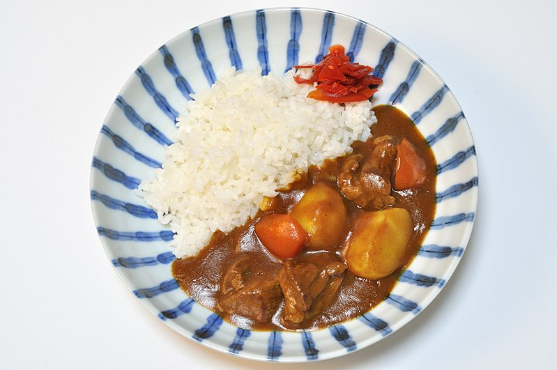

Curry

Description of Curry
Japanese curry rice, also known as "kare raisu" in Japanese, is a popular dish that has become a staple of Japanese cuisine. It consists of a thick and flavorful curry sauce served over steamed white rice, often accompanied by meat (usually chicken or beef) and vegetables such as potatoes, carrots, and onions.
The curry sauce used in Japanese curry rice typically contains a blend of spices including turmeric, cumin, coriander, cinnamon, cardamom and nutmeg. The addition of honey or apple can add sweetness to the dish while milk or coconut milk may be added to give it a creamy texture. The combination of these ingredients results in a rich savory flavor with just the right amount of spiciness that makes it an irresistible comfort food for many people around the world.
Ingredients
- Curry roux blocks or powder (readily available in Asian grocery stores)
- Meat (chicken, beef, pork) or seafood (shrimp, squid)
- Vegetables such as potatoes, carrots and onions
- Garlic and ginger for flavoring
- Oil for frying meat and vegetables
- Water or broth to create the curry sauce base
- Soy sauce and/or mirin for added umami flavor
- Salt and pepper to taste
Steps
-
Heat oil in a large pot over medium heat. Once hot, add onion and cook until it becomes translucent.
-
Add garlic and ginger to the pot. Cook for another minute until fragrant.
-
Season meat with salt and pepper then add them to the pot with onions mixture.Cook it until browned on all sides.
-
Add carrots and potatoes to the pot along with enough water/broth to cover everything evenly.
-
Bring everything up to a boil then reduce heat down low so that it simmers gently.Remove any scum that forms on top of sauce surface .
-
Add curry roux blocks/powder according to your desired level of spiciness.Stir well until it is fully melted/dissolved in liquid sauce base .
-
Let simmer slowly uncovered while stirring occasionally ,for around twenty minutes till vegetables become tender & cooked through properly.
-
Turn off heat once you achieve your desired consistency/ thickness.Serve hot over steamed white rice.